Pour alléger la page sur l'historique de voie ferrée, je crée cette annexe avec les informations collectées aux archives départementales de Carcassonne sur les projets d'ouvrages du lot 1 au 25 janvier 1888
A cette date du 25 janvier les 2 options de parcours sont sur la table :
Avec une préférence pour le parcours qui ne sera pas retenu...
Cliquer sur les images pour avoir un format plus précisle trajet proposé est encore celui du 25 janvier - donc celui non retenu
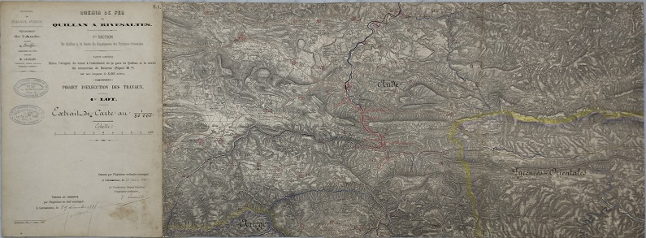 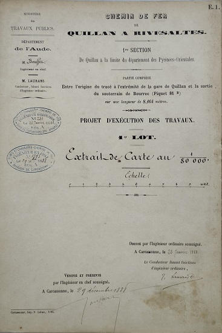 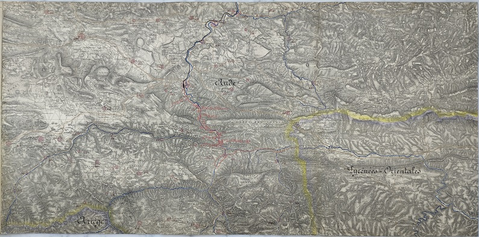 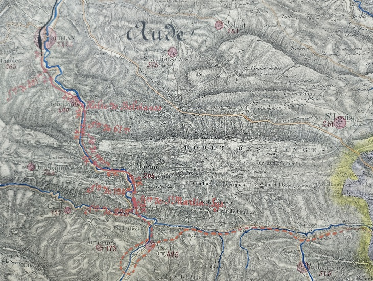Sur ce plan les 2 tracés apparaissent, sur le calque apparait le projet retenu, sur l'original l'ancien projet est dessinées
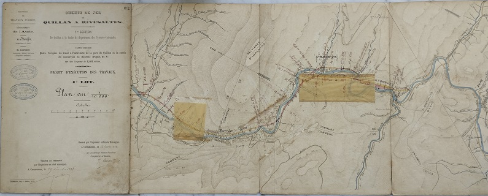 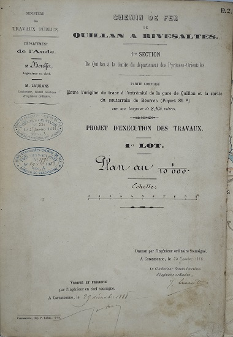 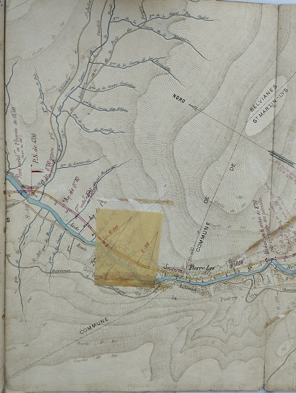 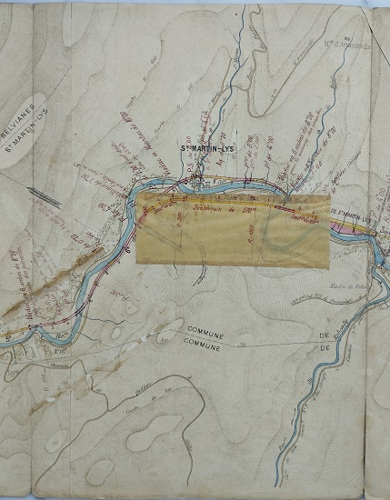 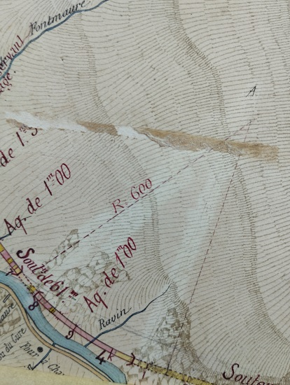 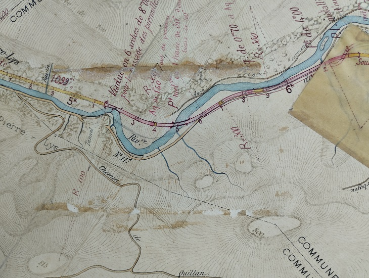Sur ce plan les 2 tracés apparaissent, sur le calque apparait le projet retenu, sur l'original les 2 propositions sont dessinées
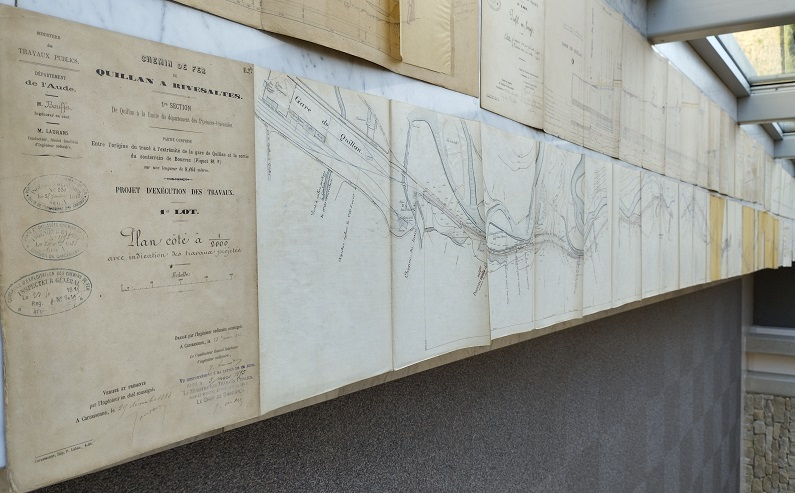 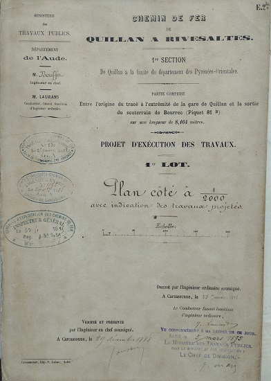 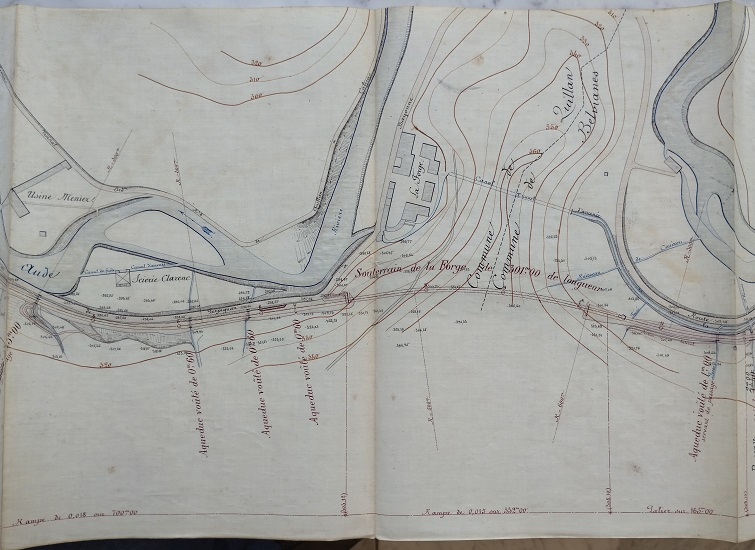 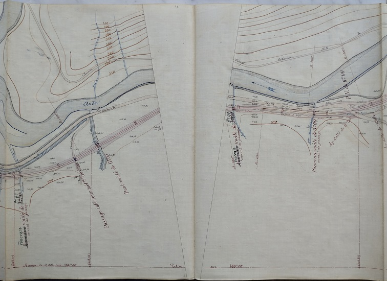 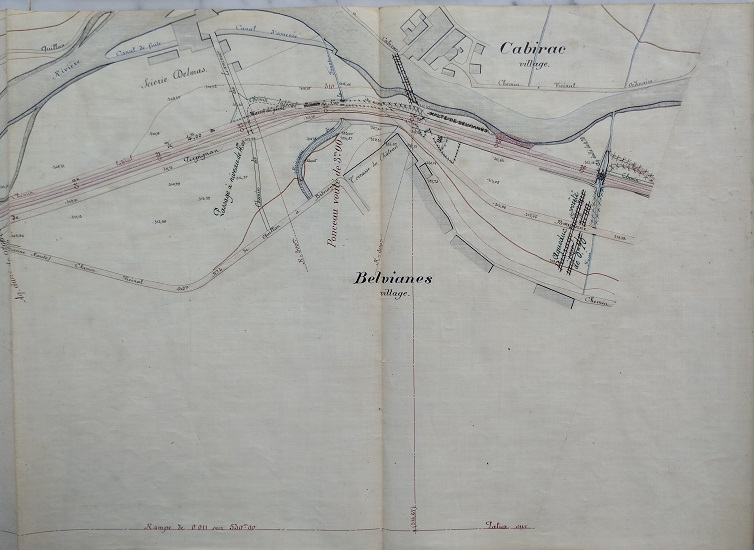 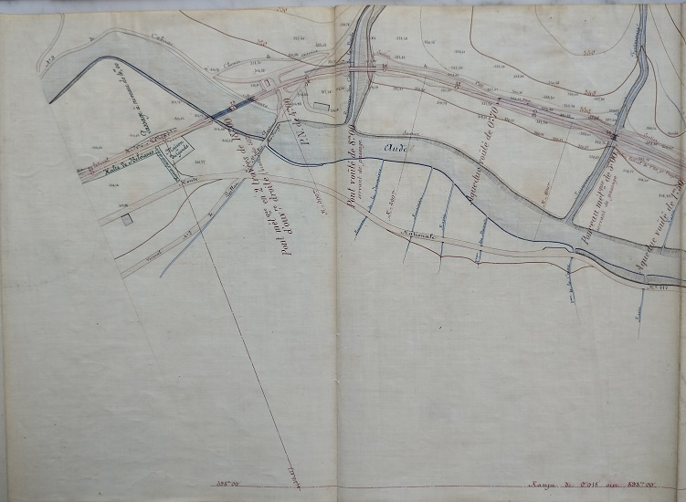 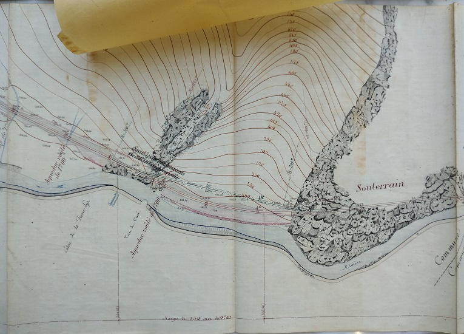 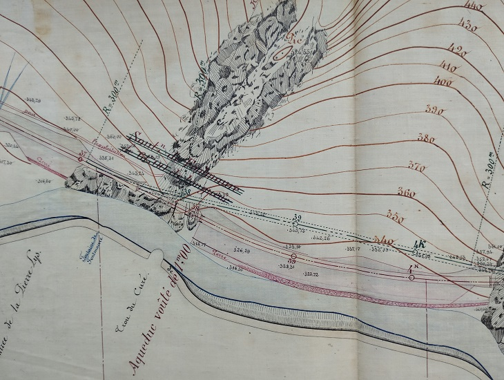 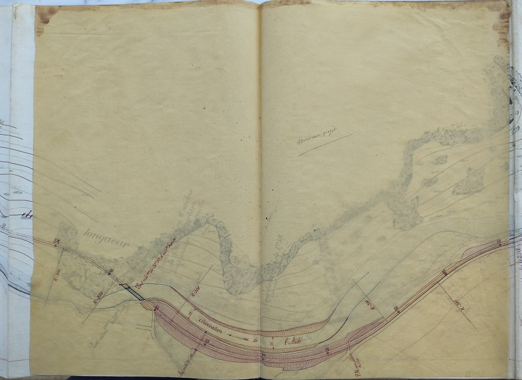 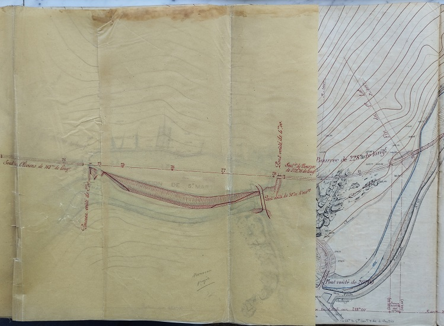Avec encore l'ancien tracé
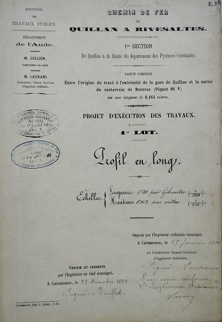
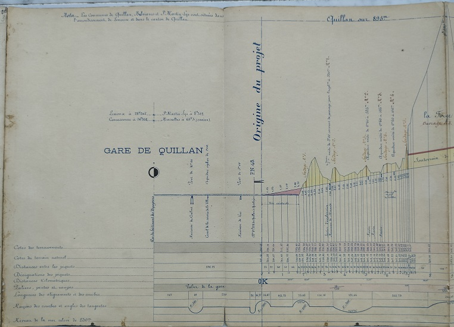
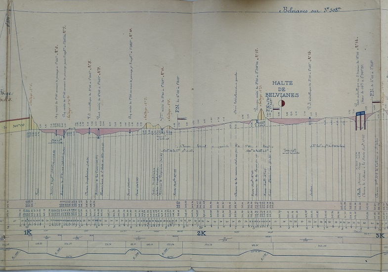
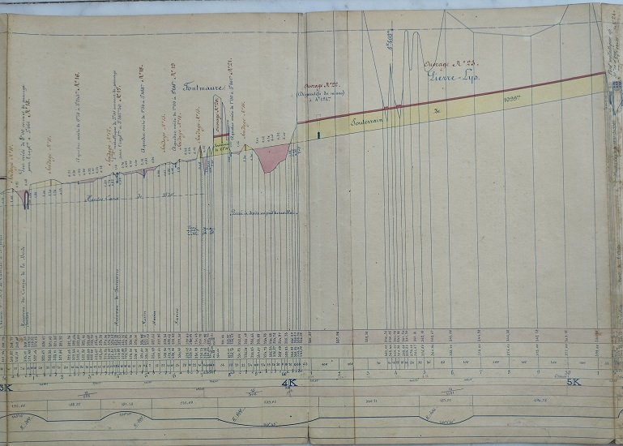
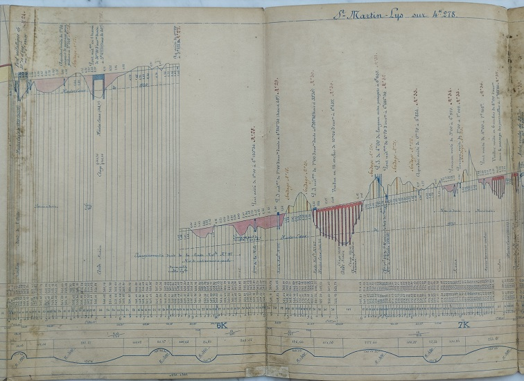


Cette carte non datée apparaissait après la E1 dans le dossier du 01 janvier 1888
Ce plan apparaissait le dossier du 01 janvier 1888 (juste après la carte géographique ci-dessus, c'est pourquoi bien que non daté je l'ai déposé ici et pas encore sur le Plan du passage à niveau n°1
Ce plan positionnait encore le pont en amont du confluant du Rébenty - placé dans le même lot de document, bonne introduction au document suivant...
Les calques de ce plan ont surchargé le plan du 25 janvier 1888 (voir le plan original plus haut) - donc réalisés postérieurement : non datés
Document de plus de 120 pages particulièrement palpitant... Porte des anotations au crayon indiquant les ouvrages d'art qui n'ont finalement pas été retenus et de ceux qui ont été concervés
J'ai une autre version de ce document plus lisible, non daté, non coté qui semble postérieure car reprend les informations de ce document, elle est fortement anoté et donc doit être un brouillon intermédiaire - non publiée à ce jour


Ce rapport pousse toujours le trajet traversant Saint Martin et le petit tunnel de FontMaure - bientôt rejeté par le ministère...
Pour faire court : c'est trop cher => revoir la copie... (au final on gagnera 700000 francs sur une facture de 13 millions...) et envisager d'autres solutions qui se traduiront par la prolongation du tunnel de la pierre-lys en remplacement du tunnel de FontMaure et par l'évitement du village de Saint Martin Lys, la diminution de l'emprise de la gare de St Martin avec déplacement du pont d'accès - mais j'anticipe sur les plans de 1895 à venir...